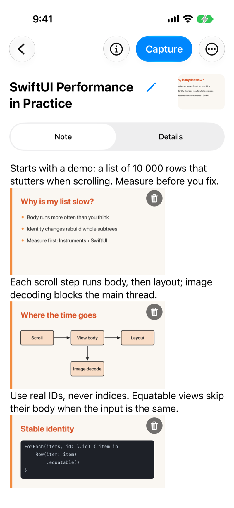
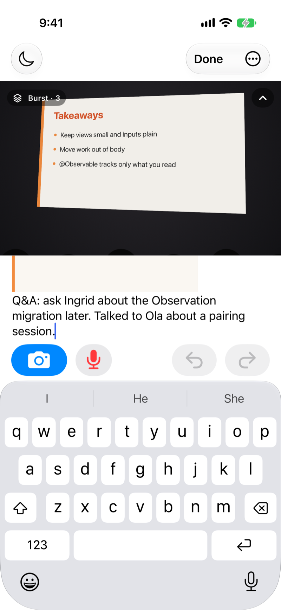
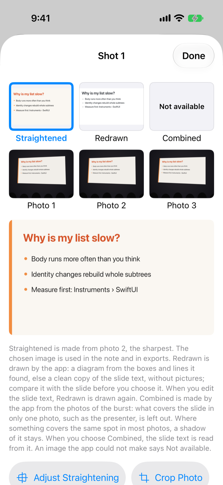
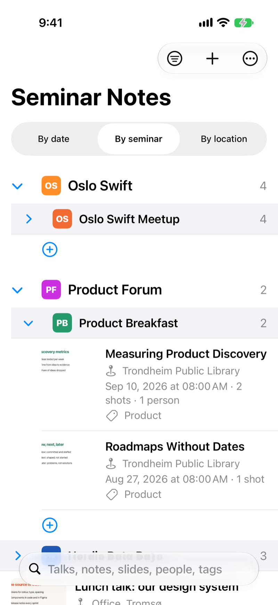
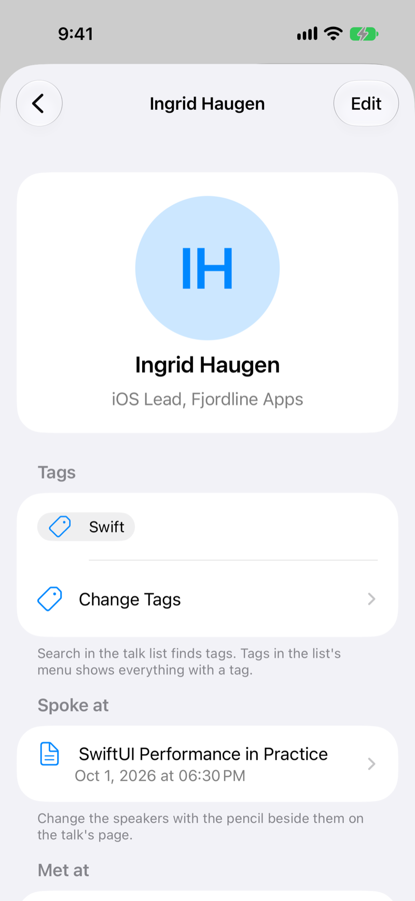
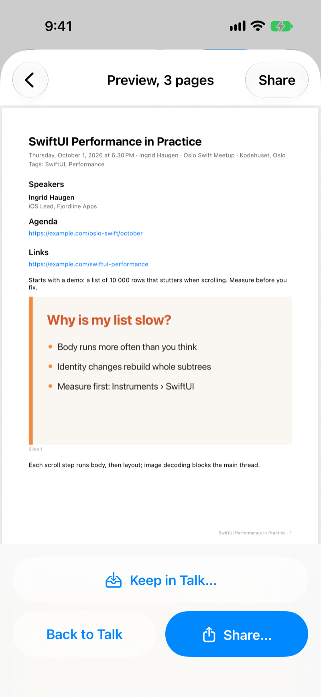

For iPhone
Come home from a seminar with notes you will actually read.
Type your notes and photograph the slides on one screen. Seminar Notes straightens every slide, reads the text on it, and writes down what the speaker said. All of it on your phone, and all of it stays there.

If you are like me, you have come home from a seminar with a camera roll full of slides. All askew, half of them blurred, and none of them next to what you were thinking at the time.
Seminar Notes puts the camera inside the note. Each slide lands where you were typing, straightened and readable, with the text on it already read. What the speaker said is written down beside it. Afterwards you have one talk, in order, not a folder of photos and a page of notes that no longer match.
Slides
Slides that look like slides
Tap the camera while you type. The app finds the slide in the photo, straightens it, and reads its text, on the phone, with no internet. The slide shows up in your note where the cursor was, and you keep typing.
- Burst. One tap takes three photos. The app keeps the sharpest, and when the presenter walks in front of the slide, it combines the three so the presenter disappears.
- Slide text. The text is read from the straightened slide, with its title, bullets, code and tables, so you can search it, copy it, and export it. Correct it where the app read wrong.
- Redrawn. A simple diagram of boxes and lines can be drawn again as a clean diagram. Marked as redrawn, with the photo one tap away.
- Your own hands. When the app finds the wrong edges, drag the corners yourself.


What was said
The talk, written down
Turn on transcription and the app listens to the talk and writes it down, on your phone, while you type and shoot. A paragraph per pause, each with the time it was said. Tell the app who said what, and the names stay with the words in every export.
After the talk, ask for a summary. It is made from the transcript, the slide text and your notes, and it always says that it was generated and from what. Nothing the app wrote is ever passed off as something you captured.
No sound is stored. The app keeps the last 90 seconds in memory while it listens, and writes only the recognized text.
Ingrid Haugen12:04
Before you reach for any optimisation, measure. Instruments has a SwiftUI template now, and it tells you which body ran and how often.
Audience12:41
Does that include views inside a lazy stack that never came on screen?
Ingrid Haugen12:47
No, and that is the point. If it shows up there, it ran, and you should ask why.
Summary · generated on this phone from the transcript and 5 slides
Everything from the event
The speakers, the people you met, and the receipts
A talk is more than its slides. Seminar Notes keeps the whole event together: the seminar and its organizer, the location, the agenda, the speakers, the people you talked to in the break, the handouts, and the taxi receipt.
- People. Scan a business card or a badge, or type a name. A person's page shows where they spoke and where you met them. Details come only from what the speaker or the conference published, never from a lookup on the web.
- Agenda. Paste the event's web page or take a photo of the programme, and the talks are set up before you arrive, with speakers and times.
- Attachments and receipts. Keep the slides the speaker sent, the PDFs, and the receipts of the trip with the talk or the seminar. Receipts have a price and a currency, and the app adds them up.
- Find it again. Search finds words in your notes, on the slides, in the transcripts, and in people and tags. Browse by date, by seminar, or by location.


Exports
One talk, as many PDFs as you need
Export a talk, or a whole seminar, as a PDF with your notes, the straightened slides, the slide text, the transcript, the people, the attachments, and the receipts. Each of them is a switch, so the same talk gives different documents.
- For your manager: notes, slides, and the receipts of the trip, as one document ready for the expense claim.
- For your colleagues: notes, slides, and the transcript, receipts left out.
- For yourself: Markdown with the images, for Obsidian or any note app. Or the whole talk as a folder, to keep or to move to another phone.
Keep an export in the talk under a name, such as "for coworkers", and it stays as it was, even when you change the talk later.

Privacy
Everything happens on your phone
Your notes, your photos, the text on the slides, the transcripts, and the people you met stay on your iPhone. Nothing is sent anywhere without you choosing to send it.
No account
There is nothing to sign up for and no server of ours. Notes, slides and transcription work without the internet.
No tracking
No analytics, no crash reporting, no advertising identifiers, no third-party code. The app has no idea who you are.
On-device intelligence
Straightening, text recognition and transcription run on the phone with Apple's own frameworks. Apple Intelligence helps with summaries where the phone has it, and nothing goes to a cloud model.
You send it, or it stays
Notes, photos and transcripts leave the phone only through a share sheet, an export file, or a backup you make yourself.
A few things do use the network, each at your request: reading an event's web page whose address you pasted, downloading Apple's speech model the first time you transcribe in a language, searching Apple Maps when you look up a location, and buying Lifetime Access through the App Store. The privacy policy describes each one.
Your data
Your notes are files, not a database
Every talk is a plain folder: a Markdown file with your notes, the photos, the straightened slides, and the slide text. You can see them in the Files app, and you can take them anywhere.
Open format
Markdown and images, in folders with readable names. No proprietary file you need the app to open.
Backup and restore
Make a backup file of everything, on a schedule if you like, and keep it in iCloud Drive or wherever you want. Restore it on a new phone.
Shrink old talks
When you are done with a talk, keep its PDF and let the app drop the photos. The notes, the details, and the slide text stay, and the space comes back.
Pricing
Free for the occasional talk. One payment if you go to many.
Seminar Notes is free to use, with one limit: you can capture on three days a month. A conference day counts once, however many talks you capture. If three days are not enough, Lifetime Access removes the limit. You pay once, and there is no subscription.
Free
Freeno time limit
- Capture on 3 days a month: notes, photos and transcription
- Reading and editing your talks, always
- Agenda, people, seminars and locations
- Export, backup and restore
You never have to delete anything to continue.
Lifetime Access
One paymentno subscription
- Capture on every day
- Everything in Free
- Family Sharing included
- Bought through the App Store, restored on your next phone
The price is shown in the app and in the App Store, in your currency.
Try it at your next talk
Seminar Notes runs on iPhone with iOS 26.
Questions, ideas, or something that went wrong? Write to dev@delichon.no.